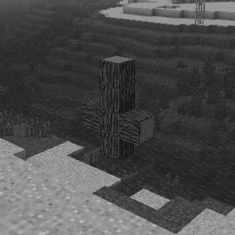
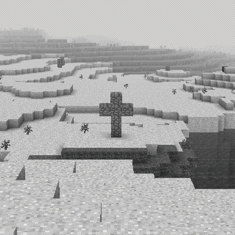
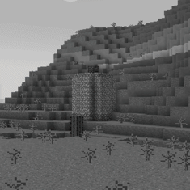

One of the first signs of the anomaly's presence is the sudden appearence of specific pre-built structures around the Overworld.
While most do not serve a practical purpose and may even be considered clutter, some can contain items and blocks that may be of the player's interest.
The reasoning for the construction of these strucures is unknown, but there are various theories on why they are present.
One theory claims they seep from the Wonderland itself from openings between dimensions. Another says they are placed by the anomaly as a sort of warning, scare-tactic or a ritual.
They may even be intended for something other than the player. The last one speculates they are constructed by the abnormal entities roaming the Overworld, with no clear and perhaps even varying goals.
Encounters with phenomenon generally increase in quantity and intensity with each visit and successful extraction from the Wonderland. This affects structures aswell.
Anyone who runs an affected save file should expect structures to swarm the landscape of the Overwold in increased frequency as they manage to get out of the Wonderland.

A Saint Peter cross made out of oak logs. It is constructed in 3x4.

A christian cross made out of cobblestone. It is constructed in 3x4.

A cylinder made out of cobblestone with an oak plank floor and roof. It contains a chest with the music disc 13 inside it. On top of it is a jukebox. It is constructed in 5x9.